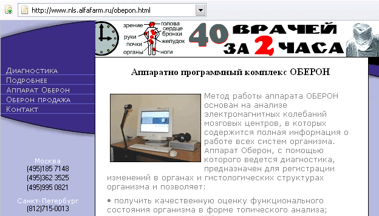
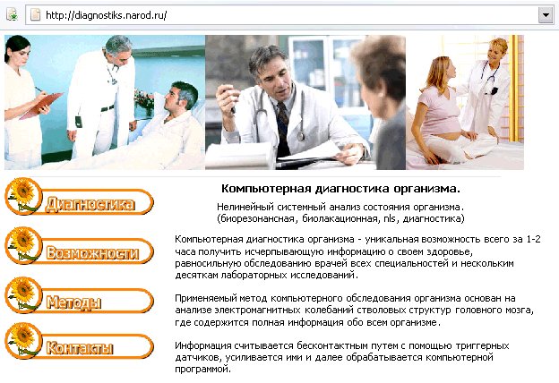

Компьютерная чудо-диагностика
Дата: 2006-11-10 09:05:00
Тема: Курьёзы медицины
Возможно ли заменить сразу все диагностические приборы и процедуры в клинике на одно простое и безопасное обследование? Сократить всех этих лаборантов и заведующих, размонтировать рентген-кабинеты и перестать колоть живых людей иголками ради получения капли крови для анализа? Уже достаточно долгое время ответ на эти вопросы известен — ДА! Однако, по каким-то непонятным причинам главные врачи больниц упорно не замечают самый экономичный и эффективный метод диагностики. А ведь вполне возможно за короткое время получить полную информацию о здоровье пациента…
Возможно ли заменить сразу все диагностические приборы и процедуры в клинике на одно простое и безопасное обследование? Сократить всех этих лаборантов и заведующих, размонтировать рентген-кабинеты и перестать колоть живых людей иголками ради получения капли крови для анализа? Уже достаточно долгое время ответ на эти вопросы известен — ДА! Однако, по каким-то непонятным причинам главные врачи больниц упорно не замечают самый экономичный и эффективный метод диагностики. А ведь вполне возможно за короткое время получить полную информацию о здоровье пациента.
Компьютерная диагностика — уникальная возможность всего за 2 час получить исчерпывающую информацию о здоровье, равносильную обследованию врачей всех специальностей и нескольким десяткам лабораторных исследований.

Метод основан на анализе электромагнитных колебаний стволовых структур головного мозга, где содержится полная информация обо всём организме. Не все, конечно, согласятся: на мой взгляд, самая подробная информация о моём организме находиться в районном военкомате. Информация считывается бесконтактным путём с помощью триггерных датчиков, усиливается ими и далее обрабатывается компьютерной программой. Достоверность компьютерной диагностики организма достигает 80-90%.
Рассмотрим преимущества:
- Развернутая и целостная картина состояния здоровья человека (в отличие от отрывочных данных лабораторных исследований).
- Выявление патологических процессов на доклинической стадии, то есть в период развития болезни, когда она ещё не вызывает жалоб (лучшее лечение — профилактика!)
- Безопасный и неинвазивный метод (Вам когда-нибудь делали ректоскопию?).
- Возможность обследования детей (рентген детям не игрушка!).
- Выдаётся наглядная картина состояния здоровья, пациент может увидеть изменения сам (не набор цифр, а цветная картинка из атласа Синельникова, где красными крестиками помечены слабые звенья Вашего здоровья. Жаль только, картинки у всех одинаковые, компьютер почему-то не понимает, что размер печени бывает различным. Не рекомендуется обследоваться пациентам с декстракардией и другими аномалиями, дабы не дискредитировать методику).
- Экономия времени и средств клиента (хватит злословить, это без спора не зря потраченное время, в моём городе это стоит всего 890 рублей; для сравнения, УЗИ — 250 рублей, рентгеноскопия органов грудной клетки — 50 рублей, консультация узкого специалиста в поликлинике — 80 рублей. Возможен выезд экспресс-метода на дом, всего-то ноутбук, принтер и присоски).
В план обследования входят (всего за 1-1,5 часа):
- Сердечно-сосудистая система (компьютерная диагностика заменит ЭКГ, УЗИ и т.п.)
- Желудочно-кишечный тракт (нет больше ФГДС!)
- Мочеполовая система (забудьте о баночках)
- Опорно-двигательная система (прощай, Конрад Рентген!)
- Дыхательная система (и т.п.)
- Эндокринная система (даёшь глюкозу крови без укола!)
- Зрительный и слуховой аппарат (интересно, как проверяют остроту зрения наушниками? Плохо слышу без очков?)
- Нервная система (специально для молоткофобов)
- Клинический биохимический анализ крови без её забора (Вот! Вот где колоссальный прыжок в науке! И кал без акта дефекации!)
- Выявление инфекции во всех органах и системах — вирусы, микробы, грибки, простейшие, глистные инвазии и т.д. (стафилококков, стрептококков, лямблий, трихомонад, хламидий, уреаплазм и т.д.).
Чтобы прокомментировать этот пункт, установленного объёма статьи не хватит… Определение наличия инфекции, вплоть до вида, надо думать и микробное число, а может и чувствительность сразу на месте, и всё это через два датчика, прикреплённые к голове — это больше, чем полёт человека в космос, уж простите, Юрий Алексеевич…
- Эндокринная система. Оценка уровней гормонов надпочечников, гипофиза, поджелудочной, щитовидной, половых желёз (уровень гормонов в крови на расстоянии, ничему не удивляемся уже…)
- Оценка иммунитета (ну, это само собой, оценка иммунитета такое же любимое занятие, как диагностика дисбактериоза)
- Изучение хромосомного набора (это полный финиш, наклейте, пожалуйста, эту модную присоску на лоб, я Вам сейчас скажу, какие у Вас хромосомные аберрации вчера после обеда были)

Следующий этап экспресс диагностики включает процедуру установления диагноза. В основе диагностики лежит сравнение виртуальной (компьютерной) модели различных нозологических форм заболеваний, имеющихся в памяти компьютера, с реальной информацией, снятой с каждого конкретного пациента. Программное обеспечение позволяет подойти к диагностике с нескольких позиций — с помощью дисперсионного анализа, энтропийного анализа, многофакторного (нелинейного) анализа, а также с помощью графиков (графическое наложение виртуальной модели заболевания на реальную информацию, снятую с пациента). Кроме того, программа позволяет анализировать не только весь орган в целом на уровне анатомии, гистологии, электронной и сканирующей микроскопии, а также отдельные очаги поражения в каждом органе и характер связи между ними. Короче, выбросьте свои электронные микроскопы, всё уже заложено в Великую Программу. Если ей доступен Ваш хромосомный набор, то ткани дифференцировать проще простого. А если пациент задаст какой-нибудь умный вопрос из физики 8 класса, то, возможно, получит такой ответ врача-специалиста по экспресс диагностике: «аппаратное и программное обеспечение позволяет осуществлять биорезонансную терапию, а именно — приготовление спектронозодов субстанций, насыщенных сверхслабой электрической активностью, обратной электромагнитной активности поражённого органа…»
Хуже всего то, что целью метода является не только диагностика, но и коррекция терапии. Специалисты этой области видят такие задачи:
- Диагностировать функциональное состояние практически всех физиологических систем организма в максимально короткий срок — не более 1,5 часов.
- Выявить заболевания, находящиеся в доклинической стадии.
- Подобрать индивидуальную программу лечения и профилактики заболеваний.
- Осуществлять первичную помощь пациенту, не прибегая к медикаментозным мерам воздействия.
Добавьте к этому анонимность обследования (ещё бы, я бы на их месте тоже не вёл никакой конкретной документации), возможность обследования детей любого возраста (присоски на теле ещё никому не повредили) — и мы получаем идеальный диагностический комплекс, причём, со всех позиций. В моём городе такой кабинет существует более 4 лет. Так почему же они не заменят устаревающее диагностическое оборудование клиник, инвазивные и малоинформативные методы? Куда смотрят экономисты? Полагаем, всех их беспокоит только одно: метод прекрасный, народ доволен, вот только жаль, что иногда приходится болеть, обследоваться и лечиться…
В.В. Привольнев
Эта статья опубликована на сайте Антибиотики и антимикробная терапия
http://antibiotic.ru/
URL этой статьи: http://antibiotic.ru/index.php?article=1454 |
|
|